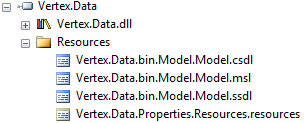
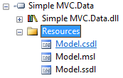

Troubleshooting Entity Framework Connection Strings
In an application which uses the Entity Framework, you may see the following error at runtime:
MetadataException: Unable to load the specified metadata resource
The cause of this error is a missing or malformed Entity Framework connection string. In particular, the cause of this error is the metadata parameter of the connection string. Let’s examine this more closely.
Which Config File?
Before you begin troubleshooting, make sure you are looking at the correct file.
Connection strings are loaded from the configuration file for the executing assembly, which may not be the assembly which contains your Entity Framework model. So if you have a data assembly containing an Entity Framework model and a web assembly containing a web application which references the data assembly, then the Entity Framework connection string needs to be in the Web.config file for the web assembly. The data assembly can have its own connection string, if you like (this is convenient, as it will be used by the Entity Framework designer), but it will not be used by the web application at runtime.
Metadata
MSDN documents EF connection strings generally. But the cause of the error above is specifically the metadata parameter. This parameter tells the Entity Framework where to find your EDMX at runtime. When your application is compiled, the EDMX is split into three parts: CSDL, MSL, and SSDL. For the purposes of this post, you don’t need to think about what they mean right now; it’s enough to know that you need all three of them at runtime.
The EDMX can be supplied to the application as embedded resources or files on disk. The default is embedded resources, so we’ll focus on that case.
The metadata parameter for an application with an Entity Framework model called Model.edmx in an assembly called Simple Mvc.Data.dll might look like this:
<connectionStrings>
<add name="MyEntities" connectionString="metadata=
res://Simple Mvc.Data.dll/Model.csdl|
res://Simple Mvc.Data.dll/Model.ssdl|
res://Simple Mvc.Data.dll/Model.msl;provider= <!-- ... -->So you can see there is one reference for each of the three parts of the EDMX that we need at runtime. They all work in the same way, so let’s examine just the first more closely. The CSDL reference looks like this:
res://Simple Mvc.Data.dll/Model.csdlIt specifies three things:
- We’re loading the CSDL from a resource. That’s the
res://part. - The name of the assembly which contains the resource,
Simple Mvc.Data.dll. If your assembly is strong named, you can specify a strong name, in all its verbose glory, here. - The name of the resource itself,
Model.csdl. Do not confuse this with the EDMX or model name. In this case they happen to be the same, except for the extension, but that’s not always true!
Let’s examine #2 and 3 more closely.
Assembly name
It’s really common to omit the assembly name in a connect string, and use * instead, like this:
<connectionStrings>
<add name="MyEntities" connectionString="metadata=
res://*/Model.csdl|
res://*/Model.ssdl|
res://*/Model.msl;provider= <!-- ... -->This means that instead of loading the resource from one specific assembly, the EF will scan all loaded assemblies at runtime. Two obvious downsides to this are that it takes a bit of time to do this, and the assembly might not be loaded yet. The second case is one reason you might get the error at the start of this post. So specifying the assembly explicitly is always a good idea, I think.
Resource names
Remember how I said that the resource name isn’t necessarily the same as the model name? Here’s a real-life example of that. I opened one of our production assemblies in Reflector, and found this:

There’s actually a good reason that those resources have such bizarre names, but it’s a digression and not relevant to this post. The point is that after you’re sure the assembly name is right, the next step in solving the error at the top of this post is to double-check the resource names.
A simpler resource name will look like this:

Remember the “simpler” metadata where I used * instead of the assembly name? You can go even simpler. This metadata, perhaps surprisingly, actually works (with caveats):
<connectionStrings>
<add name="MyEntities" connectionString="metadata=
res://*/;provider= <!-- ... -->This is the “throw everything against the wall and see what sticks” approach to a connect string. It will probably fail if your resources don’t happen to have the same name as your model, or if the assembly doesn’t happen to be loaded. But it (in simpler cases, anyway) frees the programmer from having to think about what any of this stuff means, so it’s a popular solution.